Exploring Neural Networks for Snow Avalanche Forecasting in Scotland: A Multi-Factorial Investigation
Don Gwese, Nina Lewis, Sanana Mwanawina, Matthew Russell, and Aidan Thomas
Photo by Nicolas Cool (2016) on Unsplash
Abstract
This study evaluates the potential of neural networks for avalanche forecasting in Scotland, a region where research has been sparse and limited in scope. Using a 15-year archive of avalanche forecasts from the Scottish Avalanche Information Service (SAIS), we compared three architectures: a feedforward multilayer perceptron (FFNN-MLP), a convolutional neural network (CNN), and a recurrent neural network (RNN). Each was selected for its theoretical strengths. Given the sequential nature of avalanche risk, we hypothesised that the CNN and RNN would outperform the FFNN-MLP.
Contrary to this expectation, the FFNN-MLP achieved the best overall accuracy (75%) and the most balanced detection across hazard levels. The CNN (65% accuracy) and RNN (59% accuracy) both exhibited strong bias toward the majority “Low” and “Moderate” classes, and performed poorly on higher-risk cases. Even the FFNN-MLP struggled to identify rare but critical events, with a “High” hazard sensitivity (0.56).
These findings highlight both the promise and limitations of applying neural networks directly to avalanche hazard forecasting. While the FFNN-MLP proved most effective in this context, improving detection of minority, high-risk categories remain essential. Future research should prioritise methods for addressing class imbalance, region-specific modelling, and ensemble strategies to better capture Scotland’s diverse avalanche dynamics under changing climate conditions.
Introduction and Literature Review
Snow avalanches are a hazard in snow-prone mountains. Unlike more alpine regions, avalanches in Scotland rarely impact settlements and infrastructure, but pose risks to recreational users (Bain, 2024; Diggins, 2009; Ward, 1980; WSL Institute for Snow and Avalanche Research SLF [WSL], 2016). Rising popularity of winter activities such as climbing, walking, and skiing has increased exposure to avalanche-prone terrain, resulting in injuries and occasional fatalities each year (Scottish Avalanche Information Service [SAIS], 2024; Webster, 2020, WSL, 2016). These risks prompted studies of Scottish snowpack and forecasting strategies beginning in the 1970s (Langmuir, 1970; Spink, 1970; Beattie, 1976; Ward, 1980; Ward et al., 1985). However, early work was largely descriptive, relying on snow-pit measurements and expert judgement. Building on this, Ward (1984a and 1984b) applied one of the first predictive avalanche forecasting models for Scotland.
Avalanche modelling is inherently complex, where predictions depend on multiple interacting factors (Choubin et al., 2019; Helbig et al., 2015; Hendrick et al., 2023; Pozdnoukhov et al., 2008; Singh & Ganju, 2008). This challenge is heightened in regions with variable weather (Sharma & Ganju, 1999). Early statistical methods, like nearest neighbours, supported forecasters by relating current weather to past avalanche events, however, were prone to overfitting and struggled with high-dimensional data (Blagovechshenskiy et al., 2023; Kala et al., 2025; Pozdnoukhov et al., 2018; Singh & Ganju, 2008). Using a dataset from Lochaber, Scotland, Pozdnoukhov et al. (2008) reported that support vector machines (SVMs) performed similarly to nearest neighbours while effectively handling high-dimensional data and producing richer forecasts. SVMs have also proven successful in Iran, India, Switzerland, and Tibet (Choubin et al., 2019; Rahmati et al., 2019; Schirmer et al., 2009; Tiwari et al., 2021; Wen et al., 2022).
Recently, complex machine learning (ML) algorithms (regression trees, random forests, neural networks) have demonstrated strong predictive performance in avalanche forecasting (Blagovechshenskiy et al., 2023; Choubin et al., 2019; Gauthier et al., 2025; Hendrick et al., 2023; Rahmati et al., 2019; Singh & Ganju, 2018; Tiwari et al., 2021; Wen et al., 2022). Avalanche datasets are often high-dimensional, and using forecaster-led feature selection can be highly subjective (Helbig et al., 2015; Pozdnoukhov et al., 2008). Hybrid approaches combining ML tools with expert-led feature selection have shown practical value (Gauthier et al., 2025). However, fully data-driven forecasting methods, particularly neural networks (NNs), offer important advantages.
NNs simulate brain processes through interconnected nodes, capturing complex, nonlinear relationships (Blagovechshenskiy et al., 2023; Sharma et al., 2023; Tu, 1996). By processing inputs simultaneously, patterns are learned without prior knowledge of which variables matter most (Blagovechshenskiy et al., 2023; Fromm & Schonberger, 2022; Sharma et al., 2023). Applications in Switzerland, Kazakhstan, and India show that NNs not only perform strongly, but can assess the relative importance of variables (Fromm & Schonberger; Sharma et al., 2023; Singh & Ganju, 2008). This makes them particularly well-suited for high-dimensional avalanche datasets and situations with limited domain knowledge.
Despite advances in data-driven avalanche forecasting worldwide, research specific to Scotland remains limited in three ways:
- Few published studies exist (only 9 relevant peer-reviewed papers exist on Scopus, with the most recent study from 2011 (keywords: ( “avalanche forecasting” OR “avalanche prediction” ) AND Scotland)).
- The restricted range of statistical approaches explored (only KNN and SVM) (Heierli et al., 2004; Pozdnoukhov et al., 2008; Pozdnoukhov et al., 2011; Purves et al., 2003).
- The focus on only a few regions in Scotland (primarily the Cairngorms and Lochaber regions).
This limited interest likely stems from the highly localised nature of avalanches in Scotland, which generally occur in remote areas and affect relatively few people (Diggins, 2009; SAIS, 2024). Nevertheless, improved avalanche forecasting is increasingly important under changing climate conditions, which may alter snowpack properties and avalanche risk (Gauthier et al., 2025; Werritty & Sugden, 2013). A detailed discussion of climate change, however, is beyond this paper’s scope.
The present study aims to extend forecasting research in Scotland both spatially and methodologically by applying three NNs (convolutional (CNN), recurrent (RNN), and a feedforward multilater perceptron (FFNN-MLP)) trained on combined data from six regions of Scotland: Creah Meagaidh, Glencoe, Lochaber, Northern Cairngorms, Southern Cairngorms, and Torridon. Each model was chosen for its particular strengths: CNN is good at identifying spatial and short-term temporal patterns, RNN is suited to capturing longer-term sequential trends over time, and FNN-MLP works well with categorical predictors.
Avalanche risk is sequential in nature, where current conditions are influenced by how weather and snowpack have developed over previous days, weeks, or months. For this reason, we hypothesise that the CNN and RNN will perform better than the FFNN-MLP, as these can account for these temporal patterns.
Context and Dataset
Scotland has a mild, wet, temperate maritime climate influenced by the North Atlantic Ocean and persistent south-westerly winds (Pozdnoukhov et al., 2008; Scottish Government, 2011). These conditions produce rapid temperature changes, frequent heavy precipitation (snow or rain), and strong winds. With its highest peak, Ben Nevis (1345 m), Scotland’s mountains are low compared to alpine ranges (~4000 m), resulting in a snowpack that is typically shallower, wetter, and more variable (Britannica, 2025; Pozdnoukhov et al., 2008; WSL, 2016). Rapid freeze-thaw cycles, rain-on-snow, and wind redistribution further destabilise snow, creating avalanche risks that can appear and disappear within a short time (Diggins, 2009; Pozdnoukhov et al., 2008; Purves et al., 2003; Scottish Government, 2011). Snowpack conditions also differ regionally; the West is strongly maritime, with mild and wet winters, while the North and East are colder and drier (MetOffice, 2010). Scotland’s climate is thus highly variable spatially and temporally, adding to the complexity of avalanche risk prediction.
This paper uses a 15-year archive of avalanche forecasts from Scotland across the six areas of Creah Meagaidh, Glencoe, Lochaber, Northern Cairngorms, Southern Cairngorms, and Torridon, produced by the SAIS (2025). Figure 1 illustrates the spatial distribution of observations, with points marking individual events and labels indicating area locations. Total observations by area and hazard category (Table 1) reflect differences in observation frequency rather than absolute avalanche activity. Cairngorms (Northern and Southern) and Lochaber, located in the colder and drier North and East, have the most recorded observations, whereas Torridon in the maritime West has substantially fewer. “Low” and “Moderate” hazard levels dominate across all areas, while “High” hazard events are rare and concentrated in Northern Cairngorms and Lochaber.
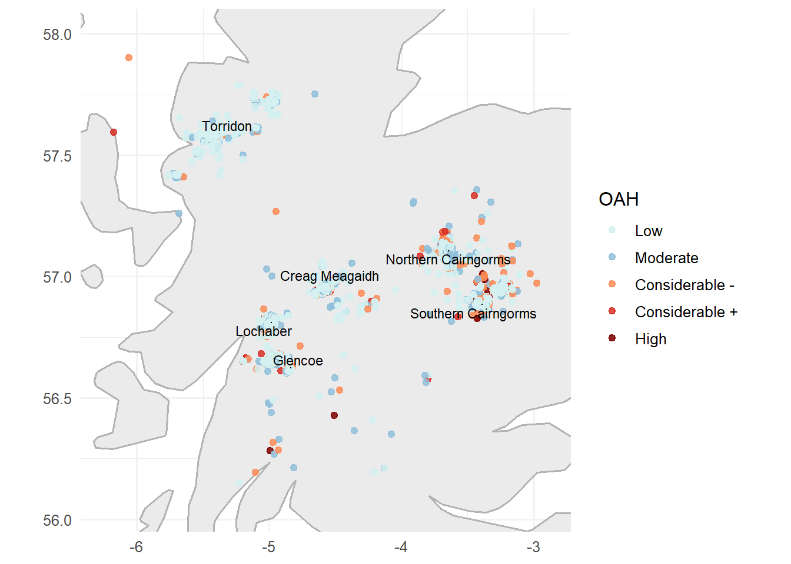
Note: Point observations coloured by hazard level; SAIS areas labelled.
| Area | Low | Moderate | Considerable - | Considerable + | High | Total |
|---|---|---|---|---|---|---|
| Creag Meagaidh | 636 | 545 | 413 | 155 | 63 | 1812 |
| Glencoe | 716 | 524 | 405 | 109 | 58 | 1812 |
| Lochaber | 597 | 498 | 506 | 116 | 56 | 1773 |
| Northern Cairngorms | 655 | 567 | 501 | 122 | 46 | 1891 |
| Southern Cairngorms | 751 | 546 | 383 | 72 | 35 | 1787 |
| Torridon | 678 | 373 | 85 | 7 | 0 | 1143 |
Data span winters (November to April) from the December 2009 to March 2025. Predictors are categorised into: (1) position and topography, (2) weather, and (3) snowpack test, all collected at the forecast location. Each observation includes the date and the forecast area (metadata). For an overview of the predictors available, see Table 2 .
| Predictor_Group | Variables |
|---|---|
| Metadata | date, area |
| Position and Topography | longitude, latitude, altitude, aspect of slope, incline of slope |
| Weather | air temperature, wind direction, wind speed, cloud cover, precipitation code, snowdrift, total snow depth, foot penetration, ski penetration, rain observed at 900m elevation, summit air temperature, summit wind direction, summit wind speed |
| Snowpack Test | max. temperature gradient, max. hardness gradient, no.settle, snow.index, insolation, crystals, wetness, AV.Cat, and snow temperature |
Exploratory Data Analysis
a. Feature Map Correlations
The Scottish avalanche dataset contains several features that are moderately to strongly correlated, while others appear largely independent (Figure 2). The presence of correlated variables is not inherently problematic, since NNs can learn non-linear interactions. However, strong correlations can increase the risk of overfitting if the network memorises patterns rather than generalising to new data.
The highest correlation found was between summit.air.temperature and air.temperature (r = 0.85), indicating strong redundancy. Nevertheless, both variables were retained as each likely capture a different aspect relevant to forecasting. Air.temperature is an identified key driver of avalanche conditions and is expected to be an important predictor in the NNs (Fromm & Schonberger, 2022; Gauthier et al., 2025; Pozdnoukhouv et al., 2018; Souckova et al., 2022; Ward,1980). Exploration of air.temperature across observed.avalanche.hazard (OAH) levels further supports its importance in forecasting (Figure 3). Higher hazard categories are generally associated with lower observed air.temperatures, with “Considerable-”, “Considerable+”, and “High” hazards centred below 0 °C. “Low” hazard days show medians above freezing and wider variability. The transition at “Moderate” hazard, where temperatures cluster around 0 °C, reflects conditions that can either stabilise or destabilise the snowpack through freeze-thaw cycles. These patterns highlight Scotland’s sensitivity to rapid temperature shifts and their impact on avalanche activity (Diggins, 2009; Pozdnoukhov et al., 2008).
Other moderate correlations (0.5<|r|< 0.80) remain informative and manageable for NNs.
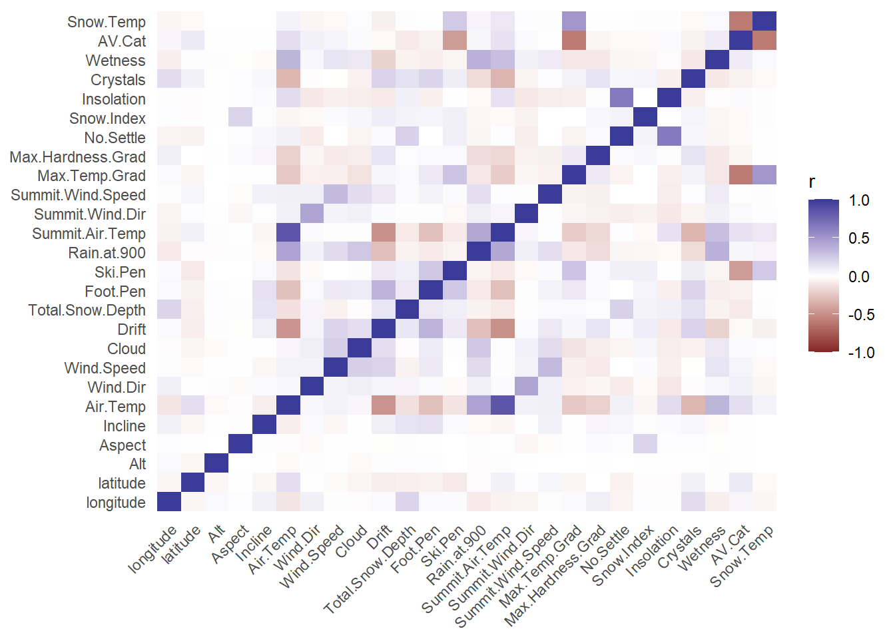
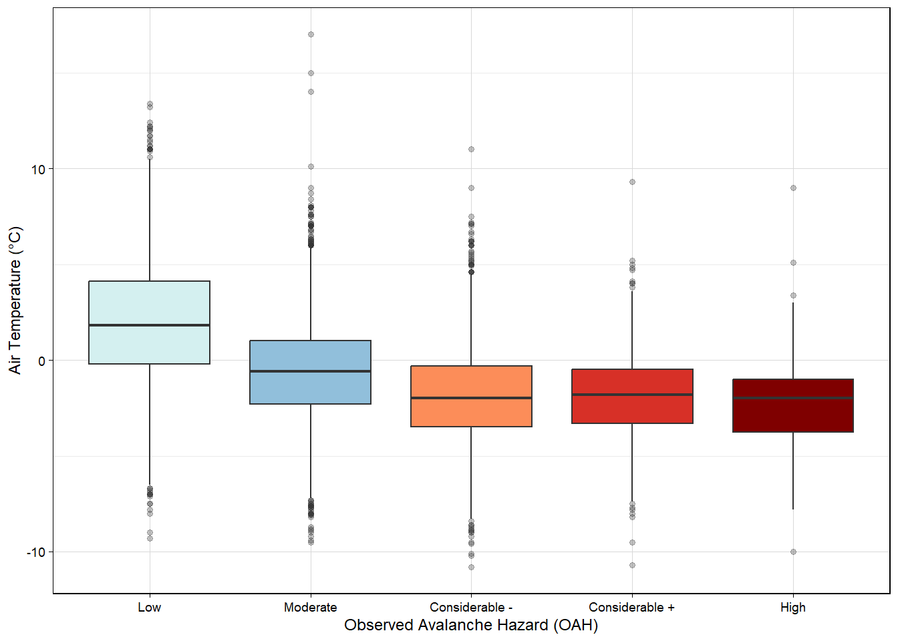
b. Precipitation Type
The distribution of OAH levels varies across different precipitation types (Figure 4). “Low” hazard predominates under conditions of none (0) or trace (2) precipitation, whereas higher hazard categories become increasingly prevalent as snowfall intensity increases. Heavy snow (level 10) is associated with a substantially larger share of “Considerable” and “High” hazard ratings (81.9%). This aligns with existing knowledge of the Scottish climate, where rapid weather shifts and frequent rain or snow-on-snow events contribute to unstable snowpack conditions (Diggins, 2009; Pozdnoukhov et al., 2008; Purves et al., 2003; Ward, 1980).
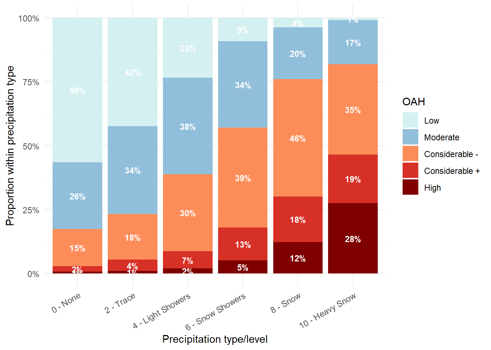
c. Seasonality
Monthly OAH patterns reveal clear seasonal trends (Figure 5). Early (November-December) and late (April-May) months are dominated by “Low” and “Moderate” hazards, while mid-season (Jan-Mar) sees more “Considerable” and “High” hazards. Most forecasts occur between December-March, highlighting the period of greatest avalanche risk (SAIS, 2024). These patterns reflect cyclical snowpack development, with mid-winter weather instability driving higher-risk avalanches (Diggins, 2009; Podzdnoukhov et al., 2008; Purves et al., 2003).
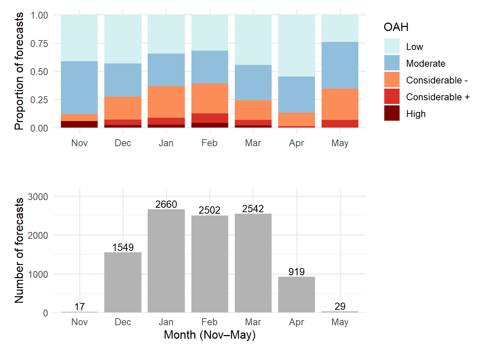
d. FAH vs OAH
Lastly, Figure 6 shows the relationship between forecast.avalanche.hazard (FAH) (day t) and OAH (day t+1). Each column sums to 100%, showing how outcomes were distributed for each forecast level. “Low” forecasts were highly accurate (86.51%), while intermediate levels (“Moderate”, “Considerable-”) had weaker agreement, often spilling into neighbouring categories. “High” forecasts were least reliable, frequently over-predicting extreme conditions.
The agreement between OAH and FAH are highest in stable “Low”-risk conditions and lowest at the extremes, with middle categories showing uncertainty.
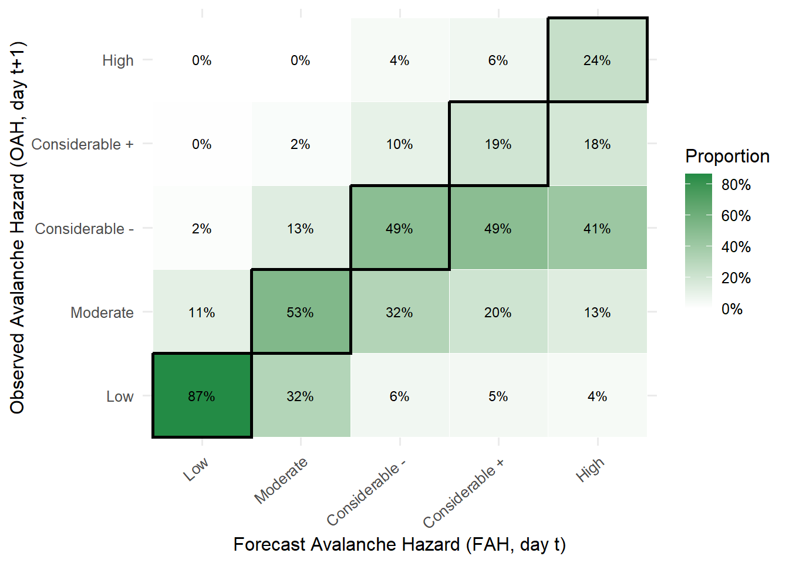
Note: Each FAH column sums to 100%; next-day alignment performed within Area (if available).
Class imbalances will need to be addressed during model training to ensure the network does not simply default to predicting the most common outcomes.
Data Cleaning and Feature Engineering
Feature engineering focused on creating temporal variables to capture trends not natively handled by a feedforward neural network (FFNN). Given that EDA highlighted that OAH varies according to the season and time of year, several variables were derived.
Before removing observations with extensive missing values, we extracted the time of day, day of the week, month, and year from each date. Next, a categorical variable for each avalanche season (December-April, 2009-2025) was created to account for the observed year-on-year increase in risk.
Table 3 presents the percentage of missing values for features with incomplete data. Av.Cat was removed because its meaning was unclear and it contained implausible values (e.g., NA, 3, -2, 2, 1, 4, 8800, -1, 0, 1021, 4400, -9999, 99, 88, 44, 5031, 121). Figure 7 shows no clear relationship between ski.penetration and OAH, except for “High” risk avalanches; we therefore excluded it since snowfall effects are likely better represented by other variables. Summit.wind.direction (12.35% missing) was also dropped for lack of a discernible trend.
| Variable | Missing (%) |
|---|---|
| AV.Cat | 23.3718 |
| Ski.Pen | 22.5283 |
| Summit.Wind.Dir | 12.3512 |
| Crystals | 9.2587 |
| Summit.Wind.Speed | 8.5184 |
| Summit.Air.Temp | 7.0659 |
| Snow.Index | 6.9815 |
| Max.Temp.Grad | 6.6535 |
| Max.Hardness.Grad | 5.8945 |
| Wetness | 5.3978 |
| Insolation | 4.7512 |
| OAH | 4.2452 |
| Snow.Temp | 3.8422 |
| Aspect | 3.3268 |
| No.Settle | 2.7083 |
| Total.Snow.Depth | 1.5275 |
| Wind.Dir | 1.4806 |
| Wind.Speed | 0.4967 |
| Foot.Pen | 0.3936 |
| Incline | 0.3374 |
| Air.Temp | 0.3186 |
| Cloud | 0.2718 |
| Alt | 0.0562 |
| Note: | |
| All values rounded to 4 decimal places. |
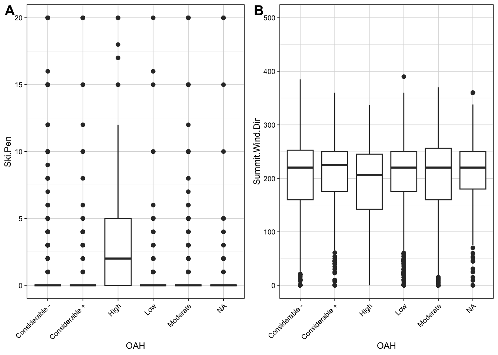
Note: Outliers have been excluded. Y-axis scale from 0 to 20 on the left, and 0 to 500 on the right.
Lastly, we dropped high-cardinality categorical variables, including osgrid and location. Osgrid appeared to be an ID variable with >3000 unique values, which would make one-hot encoding overly complex and was unlikely to indicate risk. Location was also removed, since latitude, longitude, and area already captured spatial information more effectively.
After removing variables, 36% of samples remained incomplete and were subsequently dropped. While retaining more observations would be ideal, the remaining ~7000 were sufficient for representative results.
Modelling Methodology
Three main models were used in this project to exploit different structural properties of the data: a convolutional neural network (CNN), a recurrent neural network (RNN), and a feedforward multilayer perceptron neural network (FFNN-MLP). The FFNN-MLP was expected to handle categorical predictors (e.g., forecasted avalanche risk) effectively, while the CNNs and RNNs were targeted at uncovering temporal or sequential patterns.
CNNs process data by applying convolutional filters (small weight matrices) that slide across the input space. Each filter computes dot products with local patches of the data, producing feature maps that emphasise spatial or temporal patterns based on the type of filters used. Non-linear activations are then applied, followed by pooling layers to down-sample the maps and reduce dimensionality while preserving key information. Multiple convolutional layers can be stacked, though two layers were found to balance complexity and generalisation. The below interactive animation aims to illustrate how the filtering process works.
Credit: OpenAI (2025a and 2025b)
RNNs are designed to capture sequential dependencies by incorporating feedback connections. At each time step, the hidden state depends not only on the current input but also on the state from the previous step. This architecture makes RNNs well suited for modelling temporal dynamics in sequential data.
A FFNN-MLP consists of an input layer, hidden layers of perceptron nodes, and an output layer. Each hidden node computes a weighted sum of its inputs, applies a non-linear activation, and forwards the result to the next layer. The weights are initialised randomly and updated through backpropogation using an optimiser such as gradient descent. Activation functions (e.g., ReLu, sigmoid) introduce non-linearity enabling the model to capture complex relationships between predictors and the target.
Data Preprocessing of Neural Networks models
To prepare the data for CNN and RNN, we constructed a 3-dimensional array (number of samples × the time window length × the number of features). Each training sample was created by sliding a fixed window across the data. Within the array, columns represent time steps, and depth represent data features. Since we predict one day ahead, each sample represents the observations within the window, for the next day prediction. Data were standardised to avoid distortion from differing feature scales, and one-hot encoded so each categorical variable is split into multiple binary variables demarcating each category.
To preserve temporal trends for the CNN and RNN, the train and test split was not randomly shuffled. Instead, the first 80% of records were used for training, while the remainder was used for testing, similar to the approach of Fromm and Schonberger (2022).
Convolutional Neural Network
CNN and RNN hyperparameter selection involved two stages. Firstly, several candidate datasets were created with time windows of 3-days, 7-days, 30-days and 120-days. A narrow search was used, training many models to identify the most appropriate window based on validation accuracy, estimated using cross-validation with a 20% holdout set. All models were trained for 60 epochs, except the FFNN-MLP.
In the second stage, a broader grid-search was conducted on the chosen window, selecting the model with the highest validation accuracy. In all our tests presented for the CNN, we assessed architectures with two convolutional layers using the ReLU function in those latent layers, and the softmax function in our input layer to create the class predictions. More complex architectures did not perform meaningfully better. Measures to control for class imbalance were taken for both the CNN and RNN by calculating weights, inversely proportional to the frequency of observations of that class in the training set.
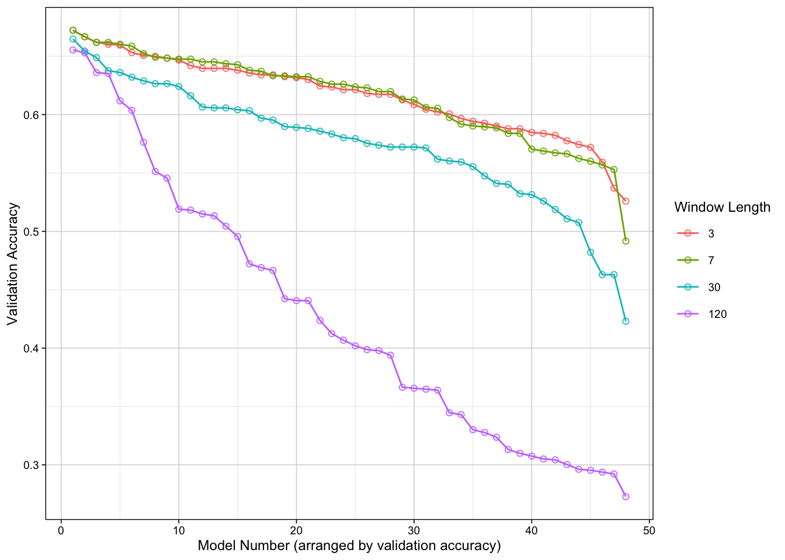
Considering Figure 8 above, we chose a 7-day prediction window. Overall, most models performed best with 3-7 days, while 30- and 120-day windows were meaningfully worse. Validation accuracy was competitive between 3 and-7-days. However, 7-days appeared more robust, as some 3-day models showed much lower accuracy at the extremes.
| hyperparameter | values |
|---|---|
| filters1 | 16, 32, 64 |
| filters2 | 16, 32, 64 |
| kernel_sz | 5, 15 |
| drop1 | 0.5, 0.7 |
| drop2 | 0.5, 0.7 |
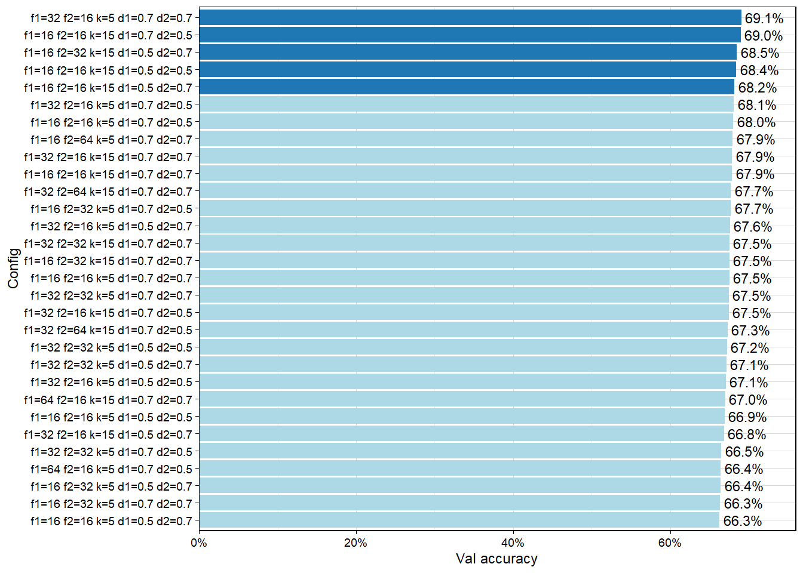
After completing the initial window search, an expanded grid-search using the hyperparameters presented in Table 4 was conducted. The validation accuracy for the top 30 models is presented in Figure 9 .The best performing model during the initial prediction window search (the first stage of the search) achieved a validation accuracy of 67, while the top model using the chosen window in the second stage of the search reached 69.1%. We stuck with this model, as validation accuracy had not improved meaningfully over the course of the expanded search. The final selected model involved 32 filters in the first layer, followed by a dropout of 70%, then 16 layers in the second layers, followed by dropout of 70% and global average pooling into the final output layer, and 5 Kernels (Filters).
Recurrent Neural Network
The approach for the RNN was the same as the CNN discussed above. Firstly, a search over numerous candidate window sizes were completed, and a subsequent expanded search was done as well. In Figure 10 below, the validation accuracy of the models test is presented. We used a combination of two Long Short-Term memory layers (LSTM), with dropout and varied the LSTM units and dropout values in the grid-search.
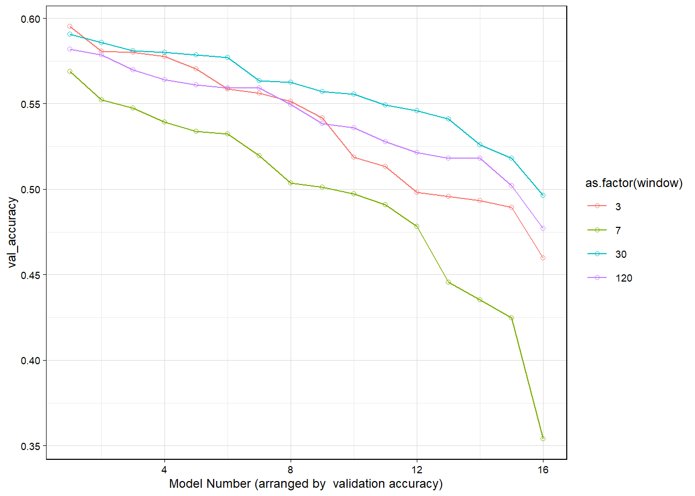
The RNN window search showed more competitive performance. In this case, a window of 30-days appears more robust overall, containing fewer worse performing models towards the extreme end. We therefore conducted an expanded grid-search using this window, the results of which are presented in Figure 11 below. The grid-search hyperparameters are listed in Table 5.
| Hyperparameter | Values |
|---|---|
| units1 | 16, 32, 64 |
| units2 | 16, 32, 64 |
| drop1 | 0.3, 0.5, 0.7 |
| drop2 | 0.3, 0.5, 0.7 |
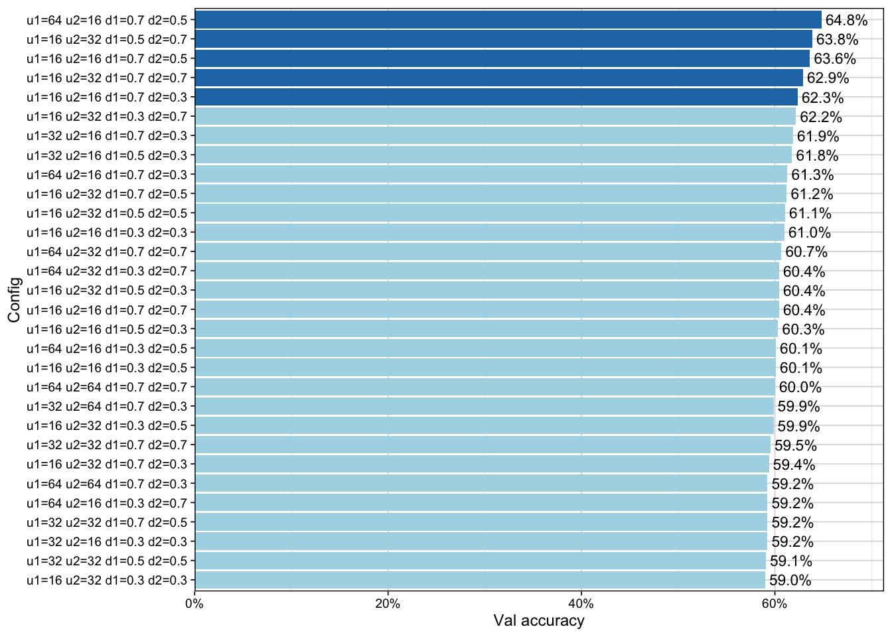
From the expanded grid-search, the best performing model achieved a validation accuracy of 64.8%. We fitted this model to the full training data and used that to predict onto the test set. Overall, we were satisfied with this search as the validation accuracy had not improved drastically compared to the initial window search; for example, the best model in the first stage reached roughly 60%.
Feedforward Multilayer Perceptron Neural Network
The FFNN-MLP architecture was optimised through a randomised grid-search to identify the most effective combination of hyperparameters. Candidate models has consistent input and output layers, while hidden layers varied. The input layer comprised 61 nodes, corresponding to the full set of hot-one encoded engineered predictor variables, plus bias.
The grid-search explored 2-4 hidden layers with neuron configurations such as [256, 128, 64], [512, 256, 128], and [128, 64]. The RectifierWithDropout activation promoted non-linearity and mitigated overfitting. The output layer had five neurons, with softmax to generate class probabilities.
To address class imbalance, each training observation was weighted inversely to its class frequency, increasing the influence of minority classes during optimisation.
The randomised grid-search evaluated a maximum of 216 candidate models, exploring a predefined hyperparameter space. Key hyperparameters and their search ranges are detailed in Table 6 .
| Hyperparameter | Values |
|---|---|
| hidden | (128,128); (128,64); (64,32,16); (64,32) |
| activation | RectifierWithDropout |
| l1 | 0, 1e-4, 1e-5 |
| l2 | 0, 1e-4, 1e-5 |
| rate | 0.01, 0.001 |
| input dropout ratio | 0.1, 0.3, 0.5 |
Models were trained for up to 200 epochs with early stopping, terminating if validation logloss did not improve by at least 1e-4 over 10 consecutive intervals.
Results and Discussion
Confusion Matrices
Figure 12 displays the confusion matrices for the three models. FFNN-MLP has a clearer diagonal, indicating stronger performance. The confusion matrix for RNN is very diffused with widespread misclassifications. Table 7 confirms this: RNN had the lowest accuracy (59%) and FFNN-MLP had the highest (75%). FFNN-MLP accuracy just narrowly beats the accuracy of the forecasted values (FAH) (74%). Due to the training and testing split used for the CNN and RNN (where data was neither shuffled nor randomly assigned), “High” risks, being rare, did not end up appearing in the test set. Consequently, the models’ ability to identify “High” risk cases could not be evaluated.
The diagonal of the RNN is the weakest of them all. Correct predictions are concentrated in “Low” (752), with smaller numbers for “Moderate” (165) and “Considerable+” (12). Most misclassifications involve higher-risk cases being predicted as “Low” or “Moderate”, consistently underestimating hazard.
Similarly, almost all predictions are “Low” for CNN. There is a noticeable concentration on the diagonal for “Low” classifications (735), and a considerable concentration of “Moderate” classifications (270). On the off-diagonal, misclassifications often occur between “Low” and “Moderate” (205 “Low” predicted as “Moderate”; 148 “Moderate” predicted as “Low”), while higher risk categories are frequently confused as these two classes. This shows that the model fell for imbalance bias, favouring the majority class “Low” and second most abundance “Moderate”.
The FFNN-MLP had some noticeable misclassifications between “Considerable-” and “Moderate”: 103 “Moderate” cases were predicted as “Considerable-”, and 41 “Considerable-” instances were predicted as “Moderate”. Similarly, 112 “Low” cases were predicted as “Moderate, indicating confusion between these classes. Similar to what was found for CNN and RNN, high hazard levels are often underpredicted or misclassified, while the FFNN-MLP model is most accuracy for”Low” (536) and “Moderate” (369) cases.
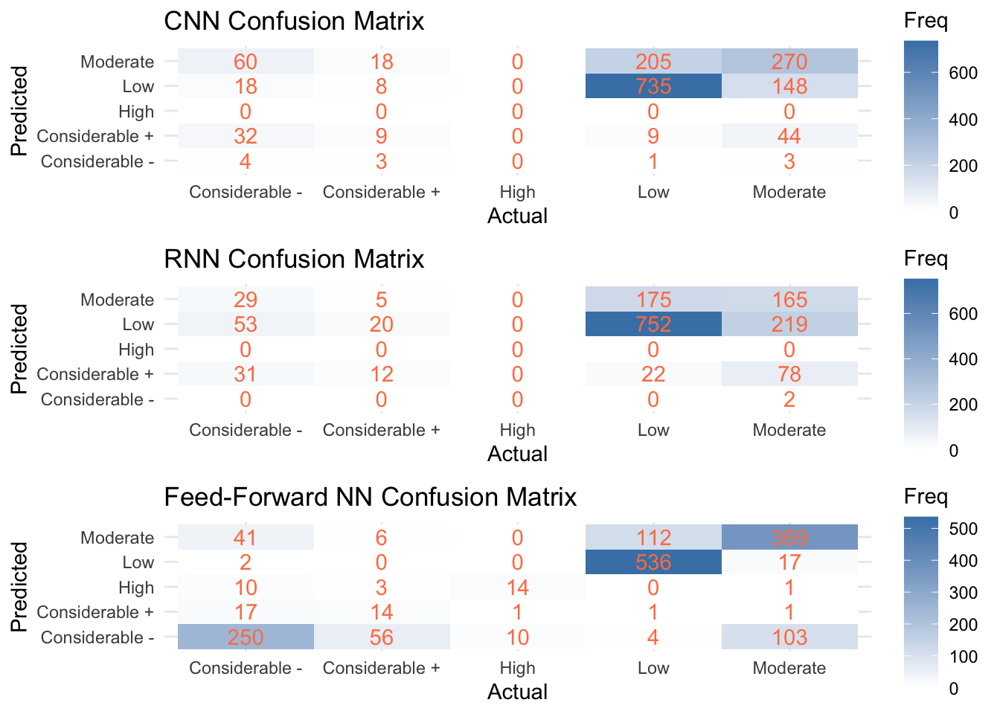
Overall Model Performance
In Table 7 below, an overview of each model’s performance is presented. The FFNN-MLP performs best, achieving the highest accuracy, recall, specificity, and precision scores. The CNN serves as a middle ground, with acceptable accuracy but low recall. The RNN model performs the worst overall. Its recall and precision are fairly low which cast its practical reliability into doubt.
| Accuracy | Kappa | Recall | Specificity | Precision | |
|---|---|---|---|---|---|
| FFNN_NLP | 0.7545 | 0.645 | 0.6182 | 0.9341 | 0.6335 |
| CNN | 0.6496 | 0.353 | 0.4066 | 0.8802 | 0.4391 |
| RNN | 0.5944 | 0.222 | 0.3681 | 0.8494 | 0.3113 |
| Note: | |||||
| All values rounded to 4 decimal places. |
FFNN-MLP’s specificity was 0.9341, the highest observed, showing it is very good at ruling out cases that do not belong to a class. Its recall was 0.6182 (identified ~62% of true cases), with a higher ability to catch more actual danger levels compared to CNN and RNN. CNN and RNN specificity scores were 0.8802 and 0.8494 respectively, indicating a fair ability to avoid false alarms, but not up to par with FFNN-MLP. Notably, RNN’s precision was 0.3113, meaning that the RNN model is wrong more often than it is not. Contrast that with CNN’s 0.4391 precision (correct a little under half the time) and FFNN-MLP’s 0.6335 (correct around 63% of the time).
Model Statistics by Class
Looking at performance statistics by class can help us gain useful insight into each model’s strengths and weaknesses, providing a more detailed overview of model behaviour. Table 8, Table 9, and Table 10 summarise our model statistics by class.
| Sensitivity | Specificity | Pos Pred Value | Neg Pred Value | Precision | Recall | F1 | Prevalence | Detection Rate | Detection Prevalence | Balanced Accuracy | |
|---|---|---|---|---|---|---|---|---|---|---|---|
| Class: Low | 0.7737 | 0.7180 | 0.8086 | 0.6733 | 0.8086 | 0.7737 | 0.7907 | 0.6063 | 0.4690 | 0.5801 | 0.7458 |
| Class: Moderate | 0.5806 | 0.7432 | 0.4882 | 0.8077 | 0.4882 | 0.5806 | 0.5305 | 0.2967 | 0.1723 | 0.3529 | 0.6619 |
| Class: Considerable - | 0.0351 | 0.9952 | 0.3636 | 0.9293 | 0.3636 | 0.0351 | 0.0640 | 0.0728 | 0.0026 | 0.0070 | 0.5151 |
| Class: Considerable + | 0.2368 | 0.9444 | 0.0957 | 0.9803 | 0.0957 | 0.2368 | 0.1364 | 0.0243 | 0.0057 | 0.0600 | 0.5906 |
| Class: High | NA | 1.0000 | NA | NA | NA | NA | NA | 0.0000 | 0.0000 | 0.0000 | NA |
| Note: | |||||||||||
| All values rounded to 4 decimal places. |
| Sensitivity | Specificity | Pos Pred Value | Neg Pred Value | Precision | Recall | F1 | Prevalence | Detection Rate | Detection Prevalence | Balanced Accuracy | |
|---|---|---|---|---|---|---|---|---|---|---|---|
| Class: Low | 0.7924 | 0.5244 | 0.7203 | 0.6204 | 0.7203 | 0.7924 | 0.7546 | 0.6072 | 0.4811 | 0.6679 | 0.6584 |
| Class: Moderate | 0.3556 | 0.8098 | 0.4412 | 0.7485 | 0.4412 | 0.3556 | 0.3938 | 0.2969 | 0.1056 | 0.2393 | 0.5827 |
| Class: Considerable - | 0.0000 | 0.9986 | 0.0000 | 0.9276 | 0.0000 | 0.0000 | NaN | 0.0723 | 0.0000 | 0.0013 | 0.4993 |
| Class: Considerable + | 0.3243 | 0.9142 | 0.0839 | 0.9824 | 0.0839 | 0.3243 | 0.1333 | 0.0237 | 0.0077 | 0.0915 | 0.6192 |
| Class: High | NA | 1.0000 | NA | NA | NA | NA | NA | 0.0000 | 0.0000 | 0.0000 | NA |
| Note: | |||||||||||
| All values rounded to 4 decimal places. |
| Sensitivity | Specificity | Pos Pred Value | Neg Pred Value | Precision | Recall | F1 | Prevalence | Detection Rate | Detection Prevalence | Balanced Accuracy | |
|---|---|---|---|---|---|---|---|---|---|---|---|
| Class: Low | 0.8208 | 0.9792 | 0.9658 | 0.8845 | 0.9658 | 0.8208 | 0.8874 | 0.4165 | 0.3418 | 0.3540 | 0.9000 |
| Class: Moderate | 0.7515 | 0.8524 | 0.6989 | 0.8827 | 0.6989 | 0.7515 | 0.7242 | 0.3131 | 0.2353 | 0.3367 | 0.8019 |
| Class: Considerable - | 0.7812 | 0.8614 | 0.5910 | 0.9389 | 0.5910 | 0.7812 | 0.6729 | 0.2041 | 0.1594 | 0.2698 | 0.8213 |
| Class: Considerable + | 0.1772 | 0.9866 | 0.4118 | 0.9576 | 0.4118 | 0.1772 | 0.2478 | 0.0504 | 0.0089 | 0.0217 | 0.5819 |
| Class: High | 0.5600 | 0.9909 | 0.5000 | 0.9929 | 0.5000 | 0.5600 | 0.5283 | 0.0159 | 0.0089 | 0.0179 | 0.7755 |
| Note: | |||||||||||
| All values rounded to 4 decimal places. |
CNN (Table 8) performance is best for the “Low” class (sensitivity = 0.7737, precision = 0.8086, F1 = 0.7907, balanced accuracy (BA) = 0.7458), dropping at higher-risk categories as prevalence decreases. For example, it performed poorly for “Considerable-” and “Considerable+” (sensitivity = 0.0351, 0.2368; precision = 0.3636, 0.0957; F1 = 0.0640, 0.1364; BA = 0.5151, 0.5906). RNN (Table 9) shows similar trends, with a slightly higher sensitivity for “Low” (0.7737) but lower F1 (0.7546) and BA (0.6584), and poorer performance for “Moderate” (F1 = 0.3938; BA = 0.5827) and higher-risk classes (“Considerable-”: F1 = NA, BA = 0.4993; “Considerable+”: F1 = 0.1333, BA = 0.6192). For both models, “High” could not be assessed due to zero prevalence.
However, FFNN-MLP (Table 10) maintained strong performance for the common and moderate classes: “Low” (F1 = 0.8874, BA = 0.9), “Moderate” (F1 = 0.7242, BA = 0.8019), and “Considerable-” (F1 = 0.6729, BA = 0.8213), catching most of the true cases and rarely mislabelling other classes as these. Performance dropped for “Considerable+” (F1 = 0.2478, BA = 0.5819), but unlike CNN and RNN, FFNN-MLP was able to better detect “High” (F1 = 0.5283, BA = 0.7755), showing improved identification of rarer, higher-risk categories.
This suggests model bias towards better-represented classes.
Feature Importance
In Figure 13, the feature importance plot from the FFNN-MLP is shown, for the first 30 most important variables.
The avalanche forecast variables were highly influential. FAH dominates, with FAH.Moderate, FAH.Low, FAH.Considerable-, and FAH.Considerable+ as the top predictors. Altitude (Alt) ranks just below FAH, while snow.index and the seasonal variables we constructed (season12, season5, season3) have moderate influence. This suggests seasonal trends do matter, but no single season dominates the prediction. If avalanches were restricted to one specific time/season window, we would have seen that season stand out much more.
Geographical area (Area.Torridon, Area.Glencoe) contributes minimally, indicating spatial differences are less important than FAH. Precipitation ranks lowest, adding little predictive power beyond snow index, which is clearly more influential.
Overall, the FAH drives predictions, followed by altitude and snow.index, with seasonal, spatial, and precipitation factors also adding influence on the model.
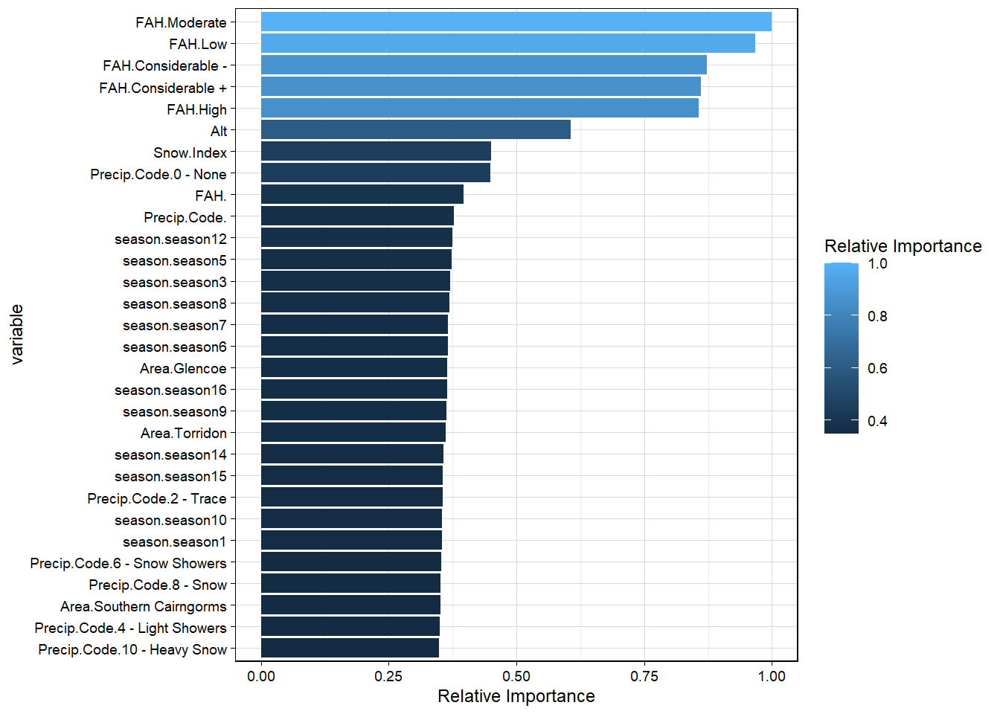
Summary of Findings
In this study, we compared the ability of CNN, RNN, and FFNN-MLP models in predicting avalanches hazard levels. This was a multi-factorial investigation, as many different variables contribute to avalanche outcomes. The nature of this problem is sequential, and we were able to preprocess that data to fit a time series context. We expected the CNN and RNN to outperform the FFNN-MLP since they have the added time series advantage.
The FFNN-MLP turned out to be the best-performing model overall. It showed the most balanced detection and achieved the best performance across hazard levels. The CNN struggled with the minority classes and mainly acted as a majority-class (“Low” hazard) detector despite the controls put in place to re-weight the classes. This is unsatisfactory because in a real forecasting setting, it’s of great importance that we can detect the higher-risk cases. The RNN performed worst overall, missing nearly all the minority class instances (“Considerable+”, “Considerable-”), and doing fairly well with the majority cases but still not as well as the other two models. This strongly disagrees with our initial hypothesis that sequential models would benefit from time series dependencies.
A clear strength across all models is that they handled the majority class fairly well. On the other hand, all three models showed clear bias toward the most common categories. None of them did especially well with the higher-risk, minority classes. The highlights a weakness in applying these models directly without addressing the class imbalance and customising the class weights more in favour of the minority classes could help counteract this measure.
Improvements & Future Contributions
While the present study used only complete cases for modelling, avalanche forecasters in practice must often make predictions despite missing data. Imputation was considered, but fell outside the scope of evaluating NN performance. Developing an imputation model for this dataset could be a way of meaningfully improving its practical use, robustness, and accuracy overall. Secondly, incorporating climate change effects by accounting for evolving weather and snowpack conditions alongside historical data could be a helpful tactic for researchers. Our models show that seasonal patterns are influential in predicting the risk. One reason this may be, is due to the evolving impact of climate change on the snowpack and ice condition. Furthermore, one may consider exploring region-specific models to reflect Scotland’s highly localized weather patterns and improve forecast reliability. Lastly, we restricted our hypothesis to neural network models only, but these may not be best suited to this data. Exploring alternative model types, such as gradient boosting or hybrid deep learning ensembles, may handle categorical data better and allow for more accurate predictions.
Conclusion
Our objective requires reliable detection across all avalanche danger levels, not just the majority ones. In this study, the FFNN-MLP came closest to meeting this requirement, but even it struggled with the minority, high-risk cases. Future work should focus on reducing class imbalance, exploring region-specific models, and experimenting with ensemble approaches to ensure that high-risk avalanche conditions are consistently and accurately detected.
References
Bain, D. 2024. Avalanche awareness in Scotland. Sports Scotland Glenmore Lodge. Available: https://www.glenmorelodge.org.uk/avalanche-awareness-in-scotland/ [2025, September 11].
Beattie, B. 1976. The densification of a seasonal snowpack in the Cairngorms with relation to avalanches. B.Sc. (professional) dissertation. University of Lancaster.
Blagovechshenskiy, V., Medeu, A., Gulyayeva, T., Zhdanov, V., Ranova, S., Kamalbekova, A. & Aldabergen, U. 2023. Application of artificial intelligence in the assessment and forecast of avalanche danger in the Ile Alatau Ridge. Water. 15(7). DOI: 10.3390/w15071438
Britannica. 2026. Ben Nevis. Available: https://www.britannica.com/place/Ben-Nevis [2025, September 10].
Choubin, B., Borji, M., Mosavi, A., Sajedi-Hosseini, F., Singh, V.P. & Shamshirband, S. 2019. Snow avalanche hazard prediction using machine learning methods. Journal of Hydrology. 577. DOI: 10.1016/j.jhydrol.2019.123929
Cool, N. 2016. Caution avalanche danger signage during winter. Unsplash. Available: https://unsplash.com/photos/caution-avalanche-danger-signage-during-winter-Cd2QnIKU6dk [2025, September 24].
Diggins, M. 2009. The challenges for Scottish avalanche forecasters observing a maritime snowpack. Proceedings of the International Snow Science Workshop. 22-24. Available: https://arc.lib.montana.edu/snow-science/objects/issw-2009-0024-0026.pdf [2025, September 10].
Fromm, R. & Schonberger, C. 2022. Estimating the danger of snow avalanches with machine learning approach using a comprehensive snow cover model. Machine Learning with Applications. 10. DOI: 10.1016/j.mlwa.2022.100405
Gauthier, F., Laliberte, J. & Meloche, F. 2025. Assessing the predictive capability of several machine learning algorithms to forecast snow avalanches using numerical weather prediction model in eastern Canada. EGUsphere. DOI: 10.5194/egusphere-2025-1572
Heierli, J., Purves, R.S., Felber, A. & Kowalski, J. 2004. Verification of nearest-neighbours interpretations in avalanche forecasting. Annals of Glaciology. 38:84-88. DOI: 10.3189/172756404781815095
Helbig, N., van Herwijnen, A. & Jonas, T. 2015. Forecasting wet-snow avalanche probability in mountainous terrain. Cold Regions Science and Technology. 120:219-226. DOI: 10.1016/j.coldregions.2015.07.001
Hendrick, M., Techel, F., Volpi, M., Olvski, T., Perez-Guillen, van Herwijnen, A. & Schweizer, J. 2023. Automated prediction of wet-snow avalanche activity in the Swiss Alps. Journal of Glaciology. 69(277):1365-1378. DOI: 10.1017/jog.2023.24
Kala, M., Jain, S., Singh, A. & Krishnan, N.C. 2025. Addressing class imbalance in avalanche forecasting. Cold Regions Science and Technology. 231. DOI: 10.1016/j.coldregions.2024.104411
Langmuir, E. 1970. Snow profiles in Scotland. Weather. 25(5):205-209. DOI: 10.1002/j.1477-8696.1970.tb03262.x
MetOffice. 2010. UK regional climates. Available: https://www.metoffice.gov.uk/research/climate/maps-and-data/regional-climates/index [2025, September 11].
OpenAI. (2025a). ChatGPT (Sept 23 version) [Large language model]. https://chatgpt.com/share/68d59a8c-efa4-8004-a295-616e83f37afb
OpenAI. (2025b). ChatGPT (Sept 23 version) [Large language model]. https://chatgpt.com/share/68d59ad3-d50c-8004-b862-18966277b186
Pozdnoukhov, A., Purves, R.S. & Kanevski, M. 2008. Applying machine learning methods to avalanche forecasting. Annals of Glaciology. 49:107-113. DOI: 10.3189/172756408787814870
Pozdnoukhov, A., Matasci, G., Kanevski, M. & Purves, R.S. 2011. Spatio-temporal avalanche forecasting with Support Vector Machines. Nat. Hazards Earth Syst. Sci. 11:367-382. DOI: 10.5194/nhess-11-367-2011
Purves, R.S., Morrison, K.W., Moss, G. & Wright, D.S.B. Nearest neighbours for avalanche forecasting in Scotland - Development, verification and optimisation of a model. Cold Regions Science and Technology. 37(3):343-355. DOI: 10.1016/S0165-232X(03)00075-2
Rahmati, O., Ghorbanzadeh, O., Teimurian, T., Mohammadi, F., Tiefenbacher, J.P., Falah, F., Pirasteh, S., Ngo, P.T.T. & Bui, D.T. 2019. Spatial modeling of snow avalanche using machine learning models and geo-environmental factors: Comparison of effectiveness in two mountain regions. Remote Sensing. 11(24). DOI: 10.3390/rs11242995
Schirmer, M., Lehning, M. & Schweizer, J. 2009. Statistical forecasting of regional avalanche danger using simulated snow-cover data. Journal of Glaciology. 55(193):761-768. DOI: 10.3189/002214309790152429
Scottish Avalanche Information Service. 2024. Reviews of the winter season. Available: https://www.sais.gov.uk/sais-annual-reports/ [2025, September 13].
Scottish Avalanche Information Service. 2025. Avalanche information for the Scottish mountains. Available: https://www.sais.gov.uk/ [2025, September 5].
Scottish Government. 2011. Scotland’s marine atlas: Information for the National Marine Plan. Available: https://www.gov.scot/publications/scotlands-marine-atlas-information-national-marine-plan/pages/7/ [2025, September, 10].
Sharma, V., Kumar, S. & Sushil, R. 2023. A neural network model for automated prediction of avalanche danger level. Nat. Hazards Earth Syst. Sci. 23:2523-2530. DOI: 10.5194/nhess-23-2523-2023
Singh, A. & Ganju, A. 2008. Artificial neural networks for snow avalanche forecasting in Indian Himalaya. Proceedings of the 12th International Conference of International Association for Computer Methods and Advances in Geomechanics (IACMAG). 1-6 October 2008. Gao, India. 1664-1670. Available: https://www.researchgate.net/publication/263651736_Artificial_Neural_Networks_for_Snow_Avalanche_Forecasting_in_Indian_Himalaya [2025, September 13].
Spink, P.C. 1970. Scottish snowbeds in summer 1969. Weather. 25(5): 201-204. DOI: 10.1002/j.1477-8696.1970.tb03261.x
Tiwari, A., Arun, G. & Vishwakarma, B.D. 2021. Parameter importance assessment improves efficacy of machine learning methods for predicting snow avalanche sites in Leh-Manali Highway, India. Science of The Total Environment. 794. DOI: 10.1016/j.scitotenv.2021.148738
Tu, J.V. 1996. Advantages and disadvantages of using artificial neural network versus logistic regression for predicting medical outcomes. Journal of Clinical Epidemiology. 49(11):1225-1231. DOI: 10.1016/S0895-4356(96)00002-9
Ward, R.G.W. 1980. Avalanche hazard in the Cairngorm Mountains, Scotland. Journal of Glaciology. 26(94):31-41. DOI: 10.3189/S0022143000201020
Ward, R.G.W. 1984a. Avalanche prediction in Scotland: I. A survey of avalanche activity. Applied Geography. 4(2):91-108. DOI: 10.1016/0143-6228(84)90016-X
Ward, R.G.W. 1984b. Avalanche prediction in Scotland: II. Development of a predictive model. Applied Geography. 4(2):109-133. DOI: 10.1016/0143-6228(84)90017-1
Ward, R.G.W., Langmuir, E.D.G. & Beattie, B. 1985. Snow profiles and avalanche activity in the Cairngorm Mountains, Scotland. Journal of Glaciology. 31(107):18-27. DOI: 10.3189/S0022143000004949
Webster, H. 2020. Avalanches in Scotland - interview with Mark Diggins. Walkhighlands. Available: https://www.walkhighlands.co.uk/news/avalanches-in-scotland-interview-with-mark-diggins/ [2025, September 10].
Wen, H., Wu, X., Liao, X., Wang, D., Huang, K. & Wunnemann, B. 2022. Application of machine learning methods for snow avalanche susceptibility mapping in the Parlung Tsangpo catchement, southeastern Qinghai-Tibet Plateau. Cold Regions Science and Technology. 198. DOI: 10.1016/j.coldregions.2022.103535
Werritty, A. & Sugden, D. 2012. Climate change and Scotland: Recent trends and impacts. Earth and Environmental Science Transactions of The Royal Society of Edinburgh. 103(2):133-147. DOI: 10.1017/S1755691013000030
WSL Institute for Snow and Avalanche Research SLF. 2016. Scotland - Avalanche warning experts exchange. Available: https://www.slf.ch/en/news/scotland-avalanche-warning-experts-exchange/?utm_source=chatgpt.com [2025, September 12].